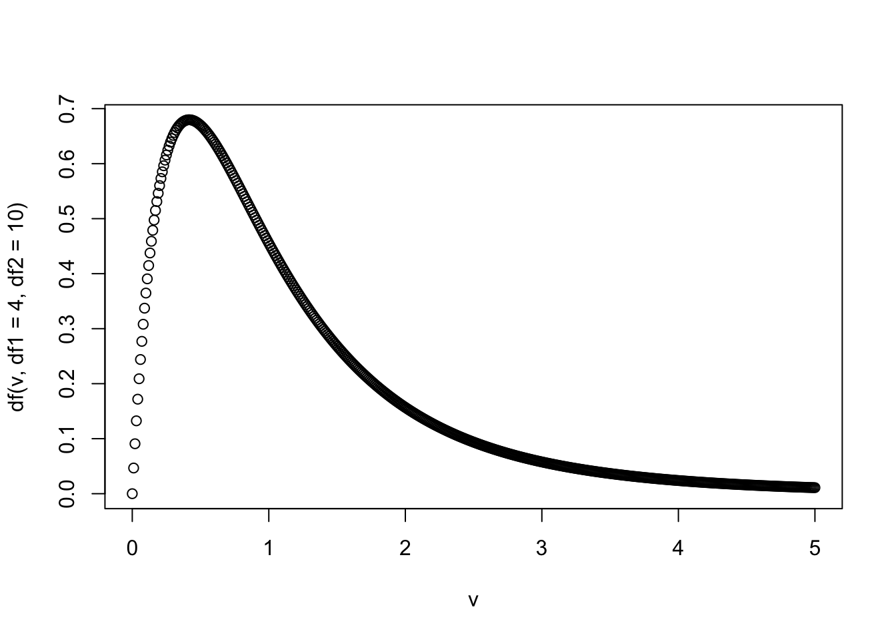
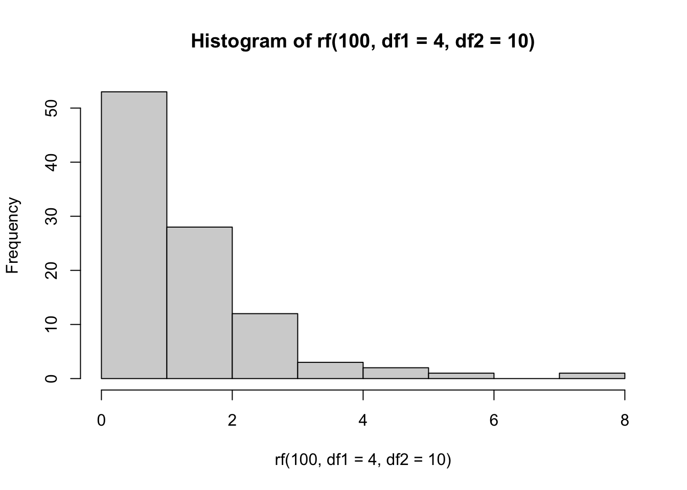

[1] 108924 Задания
Задания, которые помечены звездочкой (*) можно пропускать: это задания повышенной сложности, в них требуется подумать над решением, а не просто применить выученные инструменты.
24.1 Начало работы в R
- Разделите 9801 на 9.
- Посчитайте логарифм от 2176782336 по основанию 6.
[1] 12- Теперь натуральный логарифм 10 и умножьте его на 5.
[1] 11.51293- С помощью функции
sin()посчитайте \(\sin (\pi), \sin \left(\frac{\pi}{2}\right), \sin \left(\frac{\pi}{6}\right)\).
Значение \(\pi\) - зашитая в R константа (
pi).
[1] 1.224647e-16[1] 1[1] 0.524.2 Создание векторов
- Создайте вектор из значений 2, 30 и 4000.
[1] 2 30 4000- Создайте вектор от 1 до 20.
[1] 1 2 3 4 5 6 7 8 9 10 11 12 13 14 15 16 17 18 19 20- Создайте вектор от 20 до 1.
[1] 20 19 18 17 16 15 14 13 12 11 10 9 8 7 6 5 4 3 2 1Функция sum() возвращает сумму элементов вектора на входе. Посчитайте сумму первых 100 натуральных чисел (т.е. всех целых чисел от 1 до 100).
[1] 5050- Создайте вектор от 1 до 20 и снова до 1. Число 20 должно присутствовать только один раз!
[1] 1 2 3 4 5 6 7 8 9 10 11 12 13 14 15 16 17 18 19 20 19 18 17 16 15
[26] 14 13 12 11 10 9 8 7 6 5 4 3 2 1- Создайте вектор значений 5, 4, 3, 2, 2, 3, 4, 5:
[1] 5 4 3 2 2 3 4 5- Создайте вектор 2, 4, 6, … , 18, 20.
[1] 2 4 6 8 10 12 14 16 18 20- Создайте вектор 0.1, 0.2, 0.3, …, 0.9, 1.
[1] 0.1 0.2 0.3 0.4 0.5 0.6 0.7 0.8 0.9 1.0- 2020 год – високосный. Следующий високосный год через 4 года – это будет 2024 год. Составьте календарь всех високосных годов XXI века, начиная с 2020 года.
2100 год относится к XXI веку, а не к XXII.
[1] 2020 2024 2028 2032 2036 2040 2044 2048 2052 2056 2060 2064 2068 2072 2076
[16] 2080 2084 2088 2092 2096 2100- Создайте вектор, состоящий из 20 повторений “Хэй!”.
[1] "Хэй!" "Хэй!" "Хэй!" "Хэй!" "Хэй!" "Хэй!" "Хэй!" "Хэй!" "Хэй!" "Хэй!"
[11] "Хэй!" "Хэй!" "Хэй!" "Хэй!" "Хэй!" "Хэй!" "Хэй!" "Хэй!" "Хэй!" "Хэй!"- Как я и говорил, многие функции, работающие с одним значением на входе, так же прекрасно работают и с целыми векторами. Попробуйте посчитать квадратный корень чисел от 1 до 10 с помощью функции
sqrt()и сохраните результат в вектореroots. Выведите содержание вектораrootsв консоль.
[1] 1.000000 1.414214 1.732051 2.000000 2.236068 2.449490 2.645751 2.828427
[9] 3.000000 3.162278- *Создайте вектор из одной единицы, двух двоек, трех троек, …. , девяти девяток.
[1] 1 2 2 3 3 3 4 4 4 4 5 5 5 5 5 6 6 6 6 6 6 7 7 7 7 7 7 7 8 8 8 8 8 8 8 8 9 9
[39] 9 9 9 9 9 9 924.3 Приведение типов
- Сделайте вектор
vec1, в котором соедините3, а также значения"Мой"и"вектор".
[1] "3" "Мой" "вектор"- Попробуйте вычесть
TRUEиз 10.
[1] 9- Соедините значение
10иTRUEв векторvec2.
[1] 10 1- Соедините вектор
vec2и значение"r":
[1] "10" "1" "r" - Соедините значения
10,TRUE,"r"в вектор.
[1] "10" "TRUE" "r" 24.4 Векторизация
- Создайте вектор
p, состоящий из значений 4, 5, 6, 7, и векторq, состоящий из 0, 1, 2, 3.
[1] 4 5 6 7[1] 0 1 2 3- Посчитайте поэлементную сумму векторов
pиq:
[1] 4 6 8 10- Посчитайте поэлементную разницу
pиq:
[1] 4 4 4 4- Поделите каждый элемент вектора
pна соответствующий ему элемент вектораq:
О, да, Вам нужно делить на 0!
[1] Inf 5.000000 3.000000 2.333333- Возведите каждый элемент вектора
pв степень соответствующего ему элемента вектораq:
[1] 1 5 36 343- Умножьте каждое значение вектора
pна 10.
[1] 40 50 60 70- Создайте вектор квадратов чисел от 1 до 10:
[1] 1 4 9 16 25 36 49 64 81 100- Создайте вектор 0, 2, 0, 4, … , 18, 0, 20.
[1] 0 2 0 4 0 6 0 8 0 10 0 12 0 14 0 16 0 18 0 20- Создайте вектор 1, 0, 3, 0, 5, …, 17, 0, 19, 0.
[1] 1 0 3 0 5 0 7 0 9 0 11 0 13 0 15 0 17 0 19 0- *Создайте вектор, в котором будут содержаться первые 20 степеней двойки.
[1] 2 4 8 16 32 64 128 256 512
[10] 1024 2048 4096 8192 16384 32768 65536 131072 262144
[19] 524288 1048576- *Создайте вектор из чисел 1, 10, 100, 1000, 10000:
[1] 1 10 100 1000 10000- *Посчитать сумму последовательности \(\frac{1}{1 \cdot 2}+\frac{1}{2 \cdot 3}+\frac{1}{3 \cdot 4}+\ldots+\frac{1}{50 \cdot 51}\).
[1] 0.9803922- *Посчитать сумму последовательности \(\frac{1}{2^{0}}+\frac{1}{2^{1}}+\frac{1}{2^{2}}+\frac{1}{2^{3}}+\ldots \frac{1}{2^{20}}\).
[1] 1.999999- *Посчитать сумму последовательности \(1+\frac{4}{3}+\frac{7}{9}+\frac{10}{27}+\frac{13}{81}+\ldots+\frac{28}{19683}\).
[1] 3.749174- *Сколько чисел из последовательности \(1+\frac{4}{3}+\frac{7}{9}+\frac{10}{27}+\frac{13}{81}+\ldots+\frac{28}{19683}\) больше чем 0.5?
[1] 324.5 Индексирование векторов
- Создайте вектор
troikiсо значениями 3, 6, 9, …, 24, 27.
[1] 3 6 9 12 15 18 21 24 27- Извлеките 2, 5 и 7 значения вектора
troiki.
[1] 6 15 21- Извлеките предпоследнее значение вектора
troiki.
[1] 24- Извлеките все значения вектора
troikiкроме предпоследнего:
[1] 3 6 9 12 15 18 21 27Создайте вектор vec3, скопировав следующий код:
vec3 <- c(3, 5, 2, 1, 8, 4, 9, 10, 3, 15, 1, 11)- Найдите второй элемент вектора
vec3.
[1] 5- Верните второй и пятый элемент вектора
vec3.
[1] 5 8- Попробуйте извлечь сотое значение вектора
vec3:
[1] NA- Верните все элементы вектора
vec3кроме второго элемента.
[1] 3 2 1 8 4 9 10 3 15 1 11- Верните все элементы вектора
vec3кроме второго и пятого элемента.
[1] 3 2 1 4 9 10 3 15 1 11- Найдите последний элемент вектора
vec3.
[1] 11- Верните все значения вектора
vec3кроме первого и последнего.
[1] 5 2 1 8 4 9 10 3 15 1- Найдите все значения вектора
vec3, которые больше 4.
[1] 5 8 9 10 15 11- Найдите все значения вектора
vec3, которые больше 4, но меньше 10.
Если хотите сделать это в одну строчку, то вам помогут логические операторы!
[1] 5 8 9- Найдите все значения вектора
vec3, которые меньше 4 или больше 10.
[1] 3 2 1 3 15 1 11- Возведите в квадрат каждое значение вектора
vec3.
[1] 9 25 4 1 64 16 81 100 9 225 1 121- *Возведите в квадрат каждое значение вектора на нечетной позиции и извлеките корень из каждого значения на четной позиции вектора
vec3.
Извлечение корня - это то же самое, что и возведение в степень 0.5.
[1] 9.000000 2.236068 4.000000 1.000000 64.000000 2.000000 81.000000
[8] 3.162278 9.000000 3.872983 1.000000 3.316625- Создайте вектор 2, 4, 6, … , 18, 20 как минимум 2 новыми способами.
Знаю, это задание может показаться бессмысленным, но это очень базовая операция, с помощью которой можно, например, разделить данные на две части. Чем больше способов Вы знаете, тем лучше!
[1] 2 4 6 8 10 12 14 16 18 2024.6 Работа с пропущенными значениями
- Создайте вектор
vec4со значениями 300, 15, 8, 2, 0, 1, 110, скопировав следующий код:
vec4 <- c(300, 15, 8, 20, 0, 1, 110)
vec4[1] 300 15 8 20 0 1 110- Замените все значения
vec4, которые больше 20 наNA.
- Проверьте полученный вектор
vec4:
[1] NA 15 8 20 0 1 NA- Посчитайте сумму
vec4с помощью функцииsum(). ОтветNAне считается!
[1] 4424.7 Матрицы
- Создайте матрицу 4х4, состоящую из единиц. Назовите ее
M1.
[,1] [,2] [,3] [,4]
[1,] 1 1 1 1
[2,] 1 1 1 1
[3,] 1 1 1 1
[4,] 1 1 1 1- Поменяйте все некрайние значения матрицы
M1(то есть значения на позициях [2,2], [2,3], [3,2] и [3,3]) на число 2.
[,1] [,2] [,3] [,4]
[1,] 1 1 1 1
[2,] 1 2 2 1
[3,] 1 2 2 1
[4,] 1 1 1 1- Выделите второй и третий столбик из матрицы
M1.
[,1] [,2]
[1,] 1 1
[2,] 2 2
[3,] 2 2
[4,] 1 1- Сравните (
==) вторую колонку и вторую строчку матрицыM1.
[1] TRUE TRUE TRUE TRUE- *Создайте таблицу умножения (9х9) в виде матрицы. Сохраните ее в переменную
mult_tab.
[,1] [,2] [,3] [,4] [,5] [,6] [,7] [,8] [,9]
[1,] 1 2 3 4 5 6 7 8 9
[2,] 2 4 6 8 10 12 14 16 18
[3,] 3 6 9 12 15 18 21 24 27
[4,] 4 8 12 16 20 24 28 32 36
[5,] 5 10 15 20 25 30 35 40 45
[6,] 6 12 18 24 30 36 42 48 54
[7,] 7 14 21 28 35 42 49 56 63
[8,] 8 16 24 32 40 48 56 64 72
[9,] 9 18 27 36 45 54 63 72 81- *Из матрицы
mult_tabвыделите подматрицу, включающую в себя только строчки с 6 по 8 и столбцы с 3 по 7.
[,1] [,2] [,3] [,4] [,5]
[1,] 18 24 30 36 42
[2,] 21 28 35 42 49
[3,] 24 32 40 48 56- *Создайте матрицу с логическими значениями, где
TRUE, если в этом месте в таблице умножения (mult_tab) двузначное число иFALSE, если однозначное.
Матрица - это почти вектор. К нему можно обращаться с единственным индексом.
[,1] [,2] [,3] [,4] [,5] [,6] [,7] [,8] [,9]
[1,] FALSE FALSE FALSE FALSE FALSE FALSE FALSE FALSE FALSE
[2,] FALSE FALSE FALSE FALSE TRUE TRUE TRUE TRUE TRUE
[3,] FALSE FALSE FALSE TRUE TRUE TRUE TRUE TRUE TRUE
[4,] FALSE FALSE TRUE TRUE TRUE TRUE TRUE TRUE TRUE
[5,] FALSE TRUE TRUE TRUE TRUE TRUE TRUE TRUE TRUE
[6,] FALSE TRUE TRUE TRUE TRUE TRUE TRUE TRUE TRUE
[7,] FALSE TRUE TRUE TRUE TRUE TRUE TRUE TRUE TRUE
[8,] FALSE TRUE TRUE TRUE TRUE TRUE TRUE TRUE TRUE
[9,] FALSE TRUE TRUE TRUE TRUE TRUE TRUE TRUE TRUE- *Создайте матрицу
mult_tab2, в которой все значенияtabменьше 10 заменены на 0.
[,1] [,2] [,3] [,4] [,5] [,6] [,7] [,8] [,9]
[1,] 0 0 0 0 0 0 0 0 0
[2,] 0 0 0 0 10 12 14 16 18
[3,] 0 0 0 12 15 18 21 24 27
[4,] 0 0 12 16 20 24 28 32 36
[5,] 0 10 15 20 25 30 35 40 45
[6,] 0 12 18 24 30 36 42 48 54
[7,] 0 14 21 28 35 42 49 56 63
[8,] 0 16 24 32 40 48 56 64 72
[9,] 0 18 27 36 45 54 63 72 8124.8 Списки
Дан список list1:
list1 = list(numbers = 1:5, letters = letters, logic = TRUE)
list1$numbers
[1] 1 2 3 4 5
$letters
[1] "a" "b" "c" "d" "e" "f" "g" "h" "i" "j" "k" "l" "m" "n" "o" "p" "q" "r" "s"
[20] "t" "u" "v" "w" "x" "y" "z"
$logic
[1] TRUE- Найдите первый элемент списка
list1. Ответ должен быть списком длиной один.
$numbers
[1] 1 2 3 4 5- Теперь найдите содержание первого элемента списка
list1двумя разными способами. Ответ должен быть вектором.
[1] 1 2 3 4 5[1] 1 2 3 4 5- Теперь возьмите первый элемент содержания первого элемента списка
list1. Ответ должен быть вектором.
[1] 1- Создайте список
list2, содержащий в себе два спискаlist1. Один из них будет иметь имяpupa, а другой –lupa.
$pupa
$pupa$numbers
[1] 1 2 3 4 5
$pupa$letters
[1] "a" "b" "c" "d" "e" "f" "g" "h" "i" "j" "k" "l" "m" "n" "o" "p" "q" "r" "s"
[20] "t" "u" "v" "w" "x" "y" "z"
$pupa$logic
[1] TRUE
$lupa
$lupa$numbers
[1] 1 2 3 4 5
$lupa$letters
[1] "a" "b" "c" "d" "e" "f" "g" "h" "i" "j" "k" "l" "m" "n" "o" "p" "q" "r" "s"
[20] "t" "u" "v" "w" "x" "y" "z"
$lupa$logic
[1] TRUE- *Извлеките первый элемент списка
list2, из него – второй полэлемент, а из него – третье значение.
[1] "c"24.9 Датафрейм
- Запустите команду
data(mtcars)чтобы загрузить встроенный датафрейм с информацией про автомобили. Каждая строчка датафрейма - модель автомобиля, каждая колонка - отдельная характеристика. Подробнее см.?mtcars.
data(mtcars)
mtcars mpg cyl disp hp drat wt qsec vs am gear carb
Mazda RX4 21.0 6 160.0 110 3.90 2.620 16.46 0 1 4 4
Mazda RX4 Wag 21.0 6 160.0 110 3.90 2.875 17.02 0 1 4 4
Datsun 710 22.8 4 108.0 93 3.85 2.320 18.61 1 1 4 1
Hornet 4 Drive 21.4 6 258.0 110 3.08 3.215 19.44 1 0 3 1
Hornet Sportabout 18.7 8 360.0 175 3.15 3.440 17.02 0 0 3 2
Valiant 18.1 6 225.0 105 2.76 3.460 20.22 1 0 3 1
Duster 360 14.3 8 360.0 245 3.21 3.570 15.84 0 0 3 4
Merc 240D 24.4 4 146.7 62 3.69 3.190 20.00 1 0 4 2
Merc 230 22.8 4 140.8 95 3.92 3.150 22.90 1 0 4 2
Merc 280 19.2 6 167.6 123 3.92 3.440 18.30 1 0 4 4
Merc 280C 17.8 6 167.6 123 3.92 3.440 18.90 1 0 4 4
Merc 450SE 16.4 8 275.8 180 3.07 4.070 17.40 0 0 3 3
Merc 450SL 17.3 8 275.8 180 3.07 3.730 17.60 0 0 3 3
Merc 450SLC 15.2 8 275.8 180 3.07 3.780 18.00 0 0 3 3
Cadillac Fleetwood 10.4 8 472.0 205 2.93 5.250 17.98 0 0 3 4
Lincoln Continental 10.4 8 460.0 215 3.00 5.424 17.82 0 0 3 4
Chrysler Imperial 14.7 8 440.0 230 3.23 5.345 17.42 0 0 3 4
Fiat 128 32.4 4 78.7 66 4.08 2.200 19.47 1 1 4 1
Honda Civic 30.4 4 75.7 52 4.93 1.615 18.52 1 1 4 2
Toyota Corolla 33.9 4 71.1 65 4.22 1.835 19.90 1 1 4 1
Toyota Corona 21.5 4 120.1 97 3.70 2.465 20.01 1 0 3 1
Dodge Challenger 15.5 8 318.0 150 2.76 3.520 16.87 0 0 3 2
AMC Javelin 15.2 8 304.0 150 3.15 3.435 17.30 0 0 3 2
Camaro Z28 13.3 8 350.0 245 3.73 3.840 15.41 0 0 3 4
Pontiac Firebird 19.2 8 400.0 175 3.08 3.845 17.05 0 0 3 2
Fiat X1-9 27.3 4 79.0 66 4.08 1.935 18.90 1 1 4 1
Porsche 914-2 26.0 4 120.3 91 4.43 2.140 16.70 0 1 5 2
Lotus Europa 30.4 4 95.1 113 3.77 1.513 16.90 1 1 5 2
Ford Pantera L 15.8 8 351.0 264 4.22 3.170 14.50 0 1 5 4
Ferrari Dino 19.7 6 145.0 175 3.62 2.770 15.50 0 1 5 6
Maserati Bora 15.0 8 301.0 335 3.54 3.570 14.60 0 1 5 8
Volvo 142E 21.4 4 121.0 109 4.11 2.780 18.60 1 1 4 2- Изучите структуру датафрейма
mtcarsс помощью функцииstr().
'data.frame': 32 obs. of 11 variables:
$ mpg : num 21 21 22.8 21.4 18.7 18.1 14.3 24.4 22.8 19.2 ...
$ cyl : num 6 6 4 6 8 6 8 4 4 6 ...
$ disp: num 160 160 108 258 360 ...
$ hp : num 110 110 93 110 175 105 245 62 95 123 ...
$ drat: num 3.9 3.9 3.85 3.08 3.15 2.76 3.21 3.69 3.92 3.92 ...
$ wt : num 2.62 2.88 2.32 3.21 3.44 ...
$ qsec: num 16.5 17 18.6 19.4 17 ...
$ vs : num 0 0 1 1 0 1 0 1 1 1 ...
$ am : num 1 1 1 0 0 0 0 0 0 0 ...
$ gear: num 4 4 4 3 3 3 3 4 4 4 ...
$ carb: num 4 4 1 1 2 1 4 2 2 4 ...- Найдите значение третьей строчки четвертого столбца датафрейма
mtcars.
[1] 93- Извлеките первые шесть строчек и первые шесть столбцов датафрейма
mtcars.
mpg cyl disp hp drat wt
Mazda RX4 21.0 6 160 110 3.90 2.620
Mazda RX4 Wag 21.0 6 160 110 3.90 2.875
Datsun 710 22.8 4 108 93 3.85 2.320
Hornet 4 Drive 21.4 6 258 110 3.08 3.215
Hornet Sportabout 18.7 8 360 175 3.15 3.440
Valiant 18.1 6 225 105 2.76 3.460- Извлеките колонку
wtдатафреймаmtcars- массу автомобиля в тысячах фунтов.
[1] 2.620 2.875 2.320 3.215 3.440 3.460 3.570 3.190 3.150 3.440 3.440 4.070
[13] 3.730 3.780 5.250 5.424 5.345 2.200 1.615 1.835 2.465 3.520 3.435 3.840
[25] 3.845 1.935 2.140 1.513 3.170 2.770 3.570 2.780- Извлеките колонки из
mtcarsв следующем порядке:hp,mpg,cyl.
hp mpg cyl
Mazda RX4 110 21.0 6
Mazda RX4 Wag 110 21.0 6
Datsun 710 93 22.8 4
Hornet 4 Drive 110 21.4 6
Hornet Sportabout 175 18.7 8
Valiant 105 18.1 6
Duster 360 245 14.3 8
Merc 240D 62 24.4 4
Merc 230 95 22.8 4
Merc 280 123 19.2 6
Merc 280C 123 17.8 6
Merc 450SE 180 16.4 8
Merc 450SL 180 17.3 8
Merc 450SLC 180 15.2 8
Cadillac Fleetwood 205 10.4 8
Lincoln Continental 215 10.4 8
Chrysler Imperial 230 14.7 8
Fiat 128 66 32.4 4
Honda Civic 52 30.4 4
Toyota Corolla 65 33.9 4
Toyota Corona 97 21.5 4
Dodge Challenger 150 15.5 8
AMC Javelin 150 15.2 8
Camaro Z28 245 13.3 8
Pontiac Firebird 175 19.2 8
Fiat X1-9 66 27.3 4
Porsche 914-2 91 26.0 4
Lotus Europa 113 30.4 4
Ford Pantera L 264 15.8 8
Ferrari Dino 175 19.7 6
Maserati Bora 335 15.0 8
Volvo 142E 109 21.4 4- Посчитайте количество автомобилей с 4 цилиндрами (
cyl) в датафреймеmtcars.
[1] 11- Посчитайте долю автомобилей с 4 цилиндрами (
cyl) в датафреймеmtcars.
[1] 0.34375- Найдите все автомобили мощностью не менее 100 лошадиных сил (
hp) в датафреймеmtcars.
mpg cyl disp hp drat wt qsec vs am gear carb
Mazda RX4 21.0 6 160.0 110 3.90 2.620 16.46 0 1 4 4
Mazda RX4 Wag 21.0 6 160.0 110 3.90 2.875 17.02 0 1 4 4
Hornet 4 Drive 21.4 6 258.0 110 3.08 3.215 19.44 1 0 3 1
Hornet Sportabout 18.7 8 360.0 175 3.15 3.440 17.02 0 0 3 2
Valiant 18.1 6 225.0 105 2.76 3.460 20.22 1 0 3 1
Duster 360 14.3 8 360.0 245 3.21 3.570 15.84 0 0 3 4
Merc 280 19.2 6 167.6 123 3.92 3.440 18.30 1 0 4 4
Merc 280C 17.8 6 167.6 123 3.92 3.440 18.90 1 0 4 4
Merc 450SE 16.4 8 275.8 180 3.07 4.070 17.40 0 0 3 3
Merc 450SL 17.3 8 275.8 180 3.07 3.730 17.60 0 0 3 3
Merc 450SLC 15.2 8 275.8 180 3.07 3.780 18.00 0 0 3 3
Cadillac Fleetwood 10.4 8 472.0 205 2.93 5.250 17.98 0 0 3 4
Lincoln Continental 10.4 8 460.0 215 3.00 5.424 17.82 0 0 3 4
Chrysler Imperial 14.7 8 440.0 230 3.23 5.345 17.42 0 0 3 4
Dodge Challenger 15.5 8 318.0 150 2.76 3.520 16.87 0 0 3 2
AMC Javelin 15.2 8 304.0 150 3.15 3.435 17.30 0 0 3 2
Camaro Z28 13.3 8 350.0 245 3.73 3.840 15.41 0 0 3 4
Pontiac Firebird 19.2 8 400.0 175 3.08 3.845 17.05 0 0 3 2
Lotus Europa 30.4 4 95.1 113 3.77 1.513 16.90 1 1 5 2
Ford Pantera L 15.8 8 351.0 264 4.22 3.170 14.50 0 1 5 4
Ferrari Dino 19.7 6 145.0 175 3.62 2.770 15.50 0 1 5 6
Maserati Bora 15.0 8 301.0 335 3.54 3.570 14.60 0 1 5 8
Volvo 142E 21.4 4 121.0 109 4.11 2.780 18.60 1 1 4 2- Найдите все автомобили мощностью не менее 100 лошадиных сил (
hp) и 4 цилиндрами (cyl) в датафреймеmtcars.
mpg cyl disp hp drat wt qsec vs am gear carb
Lotus Europa 30.4 4 95.1 113 3.77 1.513 16.9 1 1 5 2
Volvo 142E 21.4 4 121.0 109 4.11 2.780 18.6 1 1 4 2- Посчитайте максимальную массу (
wt) автомобиля в выборке, воспользовавшись функциейmax():
[1] 5.424- Посчитайте минимальную массу (
wt) автомобиля в выборке, воспользовавшись функциейmin():
[1] 1.513- Найдите строчку датафрейма
mtcarsс самым легким автомобилем.
mpg cyl disp hp drat wt qsec vs am gear carb
Lotus Europa 30.4 4 95.1 113 3.77 1.513 16.9 1 1 5 2- Извлеките строчки датафрейма
mtcarsс автомобилями, масса которых ниже средней массы.
mpg cyl disp hp drat wt qsec vs am gear carb
Mazda RX4 21.0 6 160.0 110 3.90 2.620 16.46 0 1 4 4
Mazda RX4 Wag 21.0 6 160.0 110 3.90 2.875 17.02 0 1 4 4
Datsun 710 22.8 4 108.0 93 3.85 2.320 18.61 1 1 4 1
Hornet 4 Drive 21.4 6 258.0 110 3.08 3.215 19.44 1 0 3 1
Merc 240D 24.4 4 146.7 62 3.69 3.190 20.00 1 0 4 2
Merc 230 22.8 4 140.8 95 3.92 3.150 22.90 1 0 4 2
Fiat 128 32.4 4 78.7 66 4.08 2.200 19.47 1 1 4 1
Honda Civic 30.4 4 75.7 52 4.93 1.615 18.52 1 1 4 2
Toyota Corolla 33.9 4 71.1 65 4.22 1.835 19.90 1 1 4 1
Toyota Corona 21.5 4 120.1 97 3.70 2.465 20.01 1 0 3 1
Fiat X1-9 27.3 4 79.0 66 4.08 1.935 18.90 1 1 4 1
Porsche 914-2 26.0 4 120.3 91 4.43 2.140 16.70 0 1 5 2
Lotus Europa 30.4 4 95.1 113 3.77 1.513 16.90 1 1 5 2
Ford Pantera L 15.8 8 351.0 264 4.22 3.170 14.50 0 1 5 4
Ferrari Dino 19.7 6 145.0 175 3.62 2.770 15.50 0 1 5 6
Volvo 142E 21.4 4 121.0 109 4.11 2.780 18.60 1 1 4 2- Масса автомобиля указана в тысячах фунтов. Создайте колонку
wt_kgс массой автомобиля в килограммах. Результат округлите до целых значений с помощью функцииround().
1 фунт = 0.45359237 кг.
mpg cyl disp hp drat wt qsec vs am gear carb wt_kg
Mazda RX4 21.0 6 160.0 110 3.90 2.620 16.46 0 1 4 4 1188
Mazda RX4 Wag 21.0 6 160.0 110 3.90 2.875 17.02 0 1 4 4 1304
Datsun 710 22.8 4 108.0 93 3.85 2.320 18.61 1 1 4 1 1052
Hornet 4 Drive 21.4 6 258.0 110 3.08 3.215 19.44 1 0 3 1 1458
Hornet Sportabout 18.7 8 360.0 175 3.15 3.440 17.02 0 0 3 2 1560
Valiant 18.1 6 225.0 105 2.76 3.460 20.22 1 0 3 1 1569
Duster 360 14.3 8 360.0 245 3.21 3.570 15.84 0 0 3 4 1619
Merc 240D 24.4 4 146.7 62 3.69 3.190 20.00 1 0 4 2 1447
Merc 230 22.8 4 140.8 95 3.92 3.150 22.90 1 0 4 2 1429
Merc 280 19.2 6 167.6 123 3.92 3.440 18.30 1 0 4 4 1560
Merc 280C 17.8 6 167.6 123 3.92 3.440 18.90 1 0 4 4 1560
Merc 450SE 16.4 8 275.8 180 3.07 4.070 17.40 0 0 3 3 1846
Merc 450SL 17.3 8 275.8 180 3.07 3.730 17.60 0 0 3 3 1692
Merc 450SLC 15.2 8 275.8 180 3.07 3.780 18.00 0 0 3 3 1715
Cadillac Fleetwood 10.4 8 472.0 205 2.93 5.250 17.98 0 0 3 4 2381
Lincoln Continental 10.4 8 460.0 215 3.00 5.424 17.82 0 0 3 4 2460
Chrysler Imperial 14.7 8 440.0 230 3.23 5.345 17.42 0 0 3 4 2424
Fiat 128 32.4 4 78.7 66 4.08 2.200 19.47 1 1 4 1 998
Honda Civic 30.4 4 75.7 52 4.93 1.615 18.52 1 1 4 2 733
Toyota Corolla 33.9 4 71.1 65 4.22 1.835 19.90 1 1 4 1 832
Toyota Corona 21.5 4 120.1 97 3.70 2.465 20.01 1 0 3 1 1118
Dodge Challenger 15.5 8 318.0 150 2.76 3.520 16.87 0 0 3 2 1597
AMC Javelin 15.2 8 304.0 150 3.15 3.435 17.30 0 0 3 2 1558
Camaro Z28 13.3 8 350.0 245 3.73 3.840 15.41 0 0 3 4 1742
Pontiac Firebird 19.2 8 400.0 175 3.08 3.845 17.05 0 0 3 2 1744
Fiat X1-9 27.3 4 79.0 66 4.08 1.935 18.90 1 1 4 1 878
Porsche 914-2 26.0 4 120.3 91 4.43 2.140 16.70 0 1 5 2 971
Lotus Europa 30.4 4 95.1 113 3.77 1.513 16.90 1 1 5 2 686
Ford Pantera L 15.8 8 351.0 264 4.22 3.170 14.50 0 1 5 4 1438
Ferrari Dino 19.7 6 145.0 175 3.62 2.770 15.50 0 1 5 6 1256
Maserati Bora 15.0 8 301.0 335 3.54 3.570 14.60 0 1 5 8 1619
Volvo 142E 21.4 4 121.0 109 4.11 2.780 18.60 1 1 4 2 126124.10 Условные конструкции
- Создайте вектор
vec5, скопировав следующий код:
vec5 <- c(5, 20, 30, 0, 2, 9)- Создайте новый строковый вектор, где на месте чисел больше 10 в
vec5будет стоять “большое число”, а на месте остальных чисел – “маленькое число”.
[1] "маленькое число" "большое число" "большое число" "маленькое число"
[5] "маленькое число" "маленькое число"- Загрузите файл heroes_information.csv в переменную
heroes.
heroes <- read.csv("data/heroes_information.csv",
stringsAsFactors = FALSE,
na.strings = c("-", "-99"))- Создайте новою колонку
hairвheroes, в которой будет значение"Bold"для тех супергероев, у которых в колонкеHair.colorстоит"No Hair", и значение"Hairy"во всех остальных случаях.
X name Gender Eye.color Race Hair.color Height
1 0 A-Bomb Male yellow Human No Hair 203
2 1 Abe Sapien Male blue Icthyo Sapien No Hair 191
3 2 Abin Sur Male blue Ungaran No Hair 185
4 3 Abomination Male green Human / Radiation No Hair 203
5 4 Abraxas Male blue Cosmic Entity Black NA
6 5 Absorbing Man Male blue Human No Hair 193
Publisher Skin.color Alignment Weight hair
1 Marvel Comics <NA> good 441 Bold
2 Dark Horse Comics blue good 65 Bold
3 DC Comics red good 90 Bold
4 Marvel Comics <NA> bad 441 Bold
5 Marvel Comics <NA> bad NA Hairy
6 Marvel Comics <NA> bad 122 Bold- Создайте новою колонку
tallвheroes, в которой будет значение"tall"для тех супергероев, у которых в колонкеHeightстоит число больше 190, значение"short"для тех супергероев, у которых в колонкеHeightстоит число меньше 170, и значение"middle"во всех остальных случаях.
24.11 Создание функций
- Создайте функцию
plus_one(), которая принимает число и возвращает это же число + 1.
- Проверьте функцию
plus_one()на числе 41.
plus_one(41)[1] 42- Создайте функцию
circle_area(), которая вычисляет площадь круга по радиусу согласно формуле \(\pi r^2\).
- Посчитайте площадь круга с радиусом 5.
[1] 78.53982- Создайте функцию
cels2fahr(), которая будет превращать градусы по Цельсию в градусы по Фаренгейту.
- Проверьте на значениях -100, -40 и 0, что функция
cels2fahr()работает корректно.
cels2fahr(c(-100, -40, 0))[1] -148 -40 32- Напишите функцию
highlight(), которая принимает на входе строковый вектор, а возвращает тот же вектор, но дополненный значением"***"в начале и конце вектора. Лучше всего это рассмотреть на примере:
highlight(c("Я", "Бэтмен!"))[1] "***" "Я" "Бэтмен!" "***" - Теперь сделайте функцию
highlightболее гибкой. Добавьте в нее параметрwrapper =, который по умолчанию равен"***". Значение параметраwrapper =и будет вставлено в начало и конец вектора.
- Проверьте написанную функцию на векторе
c("Я", "Бэтмен!").
highlight(c("Я", "Бэтмен!")) [1] "***" "Я" "Бэтмен!" "***" highlight(c("Я", "Бэтмен!"), wrapper = "__") [1] "__" "Я" "Бэтмен!" "__" - Создайте функцию
na_n(), которая будет возвращать количествоNAв векторе.
- Проверьте функцию
na_n()на векторе:
na_n(c(NA, 3:5, NA, 2, NA))[1] 3- Напишите функцию
factors(), которая будет возвращать все делители числа в виде числового вектора.
Здесь может понадобиться оператор для получения остатка от деления:
%%.
- Проверьте функцию
factors()на простых и сложных числах:
factors(3)[1] 1 3factors(161)[1] 1 7 23 161factors(1984) [1] 1 2 4 8 16 31 32 62 64 124 248 496 992 1984- *Напишите функцию
is_prime(), которая проверяет, является ли число простым.
Здесь может пригодиться функция
any()- она возвращаетTRUE, если в векторе есть хотя бы одинTRUE.
- Проверьте какие года были для нас простыми, а какие нет:
is_prime(2017)[1] TRUEis_prime(2019)[1] FALSE2019/3 #2019 делится на 3 без остатка[1] 673is_prime(2020)[1] FALSEis_prime(2021)[1] FALSE- *Создайте функцию
monotonic(), которая возвращаетTRUE, если значения в векторе не убывают (то есть каждое следующее - больше или равно предыдущему) или не возврастают.
Полезная функция для этого –
diff()– возвращает разницу соседних значений.
monotonic(1:7)[1] TRUEmonotonic(c(1:5,5:1))[1] FALSEmonotonic(6:-1)[1] TRUEmonotonic(c(1:5, rep(5, 10), 5:10))[1] TRUEБинарные операторы типа + или %in% тоже представляют собой функции. Более того, мы можем создавать свои бинарные операторы! В этом нет особой сложности – нужно все так же создавать функцию (для двух переменных), главное окружать их % и название обрамлять обратными штрихами `. Например, можно сделать свой бинарный оператор %notin%, который будет выдавать TRUE, если значения слева нет в векторе справа:
`%notin%` <- function(x, y) ! (x %in% y)
1:10 %notin% c(1, 4, 5) [1] FALSE TRUE TRUE FALSE FALSE TRUE TRUE TRUE TRUE TRUE- *Создайте бинарный оператор
%without%, который будет возвращать все значения вектора слева без значений вектора справа.
c("а", "и", "б", "сидели", "на", "трубе") %without% c("а", "б")[1] "и" "сидели" "на" "трубе" - *Создайте бинарный оператор
%between%, который будет возвращатьTRUE, если значение в векторе слева накходится в диапазоне значений вектора справа:
1:10 %between% c(1, 4, 5) [1] TRUE TRUE TRUE TRUE TRUE FALSE FALSE FALSE FALSE FALSE24.12 Проверка на адекватность
- Создайте функцию
trim(), которая будет возвращать вектор без первого и последнего значения (вне зависимости от типа данных).
- Проверьте, что функция
trim()работает корректно:
trim(1:7)[1] 2 3 4 5 6trim(letters) [1] "b" "c" "d" "e" "f" "g" "h" "i" "j" "k" "l" "m" "n" "o" "p" "q" "r" "s" "t"
[20] "u" "v" "w" "x" "y"- Теперь добавьте в функцию
trim()параметрn =со значением по умолчанию 1. Этот параметр будет обозначать сколько значений нужно отрезать слева и справа от вектора.
- Проверьте полученную функцию:
trim(letters) [1] "b" "c" "d" "e" "f" "g" "h" "i" "j" "k" "l" "m" "n" "o" "p" "q" "r" "s" "t"
[20] "u" "v" "w" "x" "y"trim(letters, n = 2) [1] "c" "d" "e" "f" "g" "h" "i" "j" "k" "l" "m" "n" "o" "p" "q" "r" "s" "t" "u"
[20] "v" "w" "x"- Сделайте так, чтобы функция
trim()работала корректно сn = 0, т.е. функция возвращала бы исходный вектор без изменений.
trim(letters, n = 0) [1] "a" "b" "c" "d" "e" "f" "g" "h" "i" "j" "k" "l" "m" "n" "o" "p" "q" "r" "s"
[20] "t" "u" "v" "w" "x" "y" "z"- *Теперь добавьте проверку на адекватность входных данных: функция
trim()должна выдавать ошибку, еслиn =меньше нуля или еслиn =слишком большой и отрезает все значения вектора:
- *Проверьте полученную функцию
trim():
trim(1:6, 3)Error in trim(1:6, 3): n слишком большой!trim(1:6, -1)Error in trim(1:6, -1): n не может быть меньше нуля!24.13 Семейство функций apply()
- Создайте матрицу
M2:
M2 <- matrix(c(20:11, 11:20), nrow = 5)
M2 [,1] [,2] [,3] [,4]
[1,] 20 15 11 16
[2,] 19 14 12 17
[3,] 18 13 13 18
[4,] 17 12 14 19
[5,] 16 11 15 20- Посчитайте максимальное значение матрицы
M2по каждой строчке.
[1] 20 19 18 19 20- Посчитайте максимальное значение матрицы
M2по каждому столбцу.
[1] 20 15 15 20- Посчитайте среднее значение матрицы
M2по каждой строке.
[1] 15.5 15.5 15.5 15.5 15.5- Посчитайте среднее значение матрицы
M2по каждому столбцу.
[1] 18 13 13 18- Создайте список
list3:
list3 <- list(
a = 1:5,
b = 0:20,
c = 4:24,
d = 6:3,
e = 6:25
)- Найдите максимальное значение каждого вектора списка
list3.
a b c d e
5 20 24 6 25 - Посчитайте сумму каждого вектора списка
list3.
a b c d e
15 210 294 18 310 - Посчитайте длину каждого вектора списка
list3.
a b c d e
5 21 21 4 20 - Напишите функцию
max_item(), которая будет принимать на входе список, а возвращать - (первый) самый длинный его элемент.
Для этого вам может понадобиться функция
which.max(), которая возвращает индекс максимального значения (первого, если их несколько).
- Проверьте функцию
max_item()на спискеlist3.
max_item(list3) [1] 0 1 2 3 4 5 6 7 8 9 10 11 12 13 14 15 16 17 18 19 20- Теперь мы сделаем сложный список
list4:
list4 <- list(1:3, 3:40, list3)- Посчитайте длину каждого вектора в списке, в т.ч. для списка внутри. Результат должен быть списком с такой же структорой, как и изначальный список
list4.
Для этого может понадобиться функция
rapply(): recursive lapply
[[1]]
[1] 3
[[2]]
[1] 38
[[3]]
[[3]]$a
[1] 5
[[3]]$b
[1] 21
[[3]]$c
[1] 21
[[3]]$d
[1] 4
[[3]]$e
[1] 20- *Загрузите набор данных
heroesи посчитайте, сколькоNAв каждом из столбцов.
Для этого удобно использовать ранее написанную функцию
na_n().
X name Gender Eye.color Race Hair.color Height
0 0 29 172 304 172 217
Publisher Skin.color Alignment Weight hair tall
0 662 7 239 172 217 - *Используя ранее написанную функцию
is_prime(), напишите функциюprime_numbers(), которая будет возвращать все простые числа до выбранного числа.
prime_numbers(200) [1] 3 5 7 11 13 17 19 23 29 31 37 41 43 47 53 59 61 67 71
[20] 73 79 83 89 97 101 103 107 109 113 127 131 137 139 149 151 157 163 167
[39] 173 179 181 191 193 197 19924.14 magrittr::%>%
- Перепишите следующие выражения, используя
%>%:
sqrt(sum(1:10))[1] 7.416198[1] 7.416198abs(min(-5:5))[1] 5[1] 5c("Корень из", 2, "равен", sqrt(2))[1] "Корень из" "2" "равен" "1.4142135623731"[1] "Корень из" "2" "равен" "1.4142135623731"B <- matrix(10:39, nrow = 5)
apply(B, 1, mean)[1] 22.5 23.5 24.5 25.5 26.524.15 Выбор столбцов: dplyr::select()
Для выполнения следующих заданий нам понадобятся датасеты heroes и powers, которые можно загрузить, используя следующие команды:
library(tidyverse)
heroes <- read_csv("https://raw.githubusercontent.com/Pozdniakov/tidy_stats/master/data/heroes_information.csv",
na = c("-", "-99"))
powers <- read_csv("https://raw.githubusercontent.com/Pozdniakov/tidy_stats/master/data/super_hero_powers.csv")- Выберете первые 4 столбца в
powers.
# A tibble: 667 × 4
hero_names Agility `Accelerated Healing` `Lantern Power Ring`
<chr> <lgl> <lgl> <lgl>
1 3-D Man TRUE FALSE FALSE
2 A-Bomb FALSE TRUE FALSE
3 Abe Sapien TRUE TRUE FALSE
4 Abin Sur FALSE FALSE TRUE
5 Abomination FALSE TRUE FALSE
6 Abraxas FALSE FALSE FALSE
7 Absorbing Man FALSE FALSE FALSE
8 Adam Monroe FALSE TRUE FALSE
9 Adam Strange FALSE FALSE FALSE
10 Agent Bob FALSE FALSE FALSE
# … with 657 more rows- Выберите все столбцы от
ReflexesдоEmpathyв тибблеpowers:
# A tibble: 667 × 7
Reflexes Invulnerability `Energy Constructs` Force …¹ Self-…² Anti-…³ Empathy
<lgl> <lgl> <lgl> <lgl> <lgl> <lgl> <lgl>
1 FALSE FALSE FALSE FALSE FALSE FALSE FALSE
2 FALSE FALSE FALSE FALSE TRUE FALSE FALSE
3 TRUE FALSE FALSE FALSE FALSE FALSE FALSE
4 FALSE FALSE FALSE FALSE FALSE FALSE FALSE
5 FALSE TRUE FALSE FALSE FALSE FALSE FALSE
6 FALSE TRUE FALSE FALSE FALSE FALSE FALSE
7 FALSE TRUE FALSE FALSE FALSE FALSE FALSE
8 FALSE FALSE FALSE FALSE FALSE FALSE FALSE
9 FALSE FALSE FALSE FALSE FALSE FALSE FALSE
10 FALSE FALSE FALSE FALSE FALSE FALSE FALSE
# … with 657 more rows, and abbreviated variable names ¹`Force Fields`,
# ²`Self-Sustenance`, ³`Anti-Gravity`- Выберите все столбцы тиббла
powersкроме первого (hero_names):
# A tibble: 667 × 167
Agility Accelerated …¹ Lante…² Dimen…³ Cold …⁴ Durab…⁵ Stealth Energ…⁶ Flight
<lgl> <lgl> <lgl> <lgl> <lgl> <lgl> <lgl> <lgl> <lgl>
1 TRUE FALSE FALSE FALSE FALSE FALSE FALSE FALSE FALSE
2 FALSE TRUE FALSE FALSE FALSE TRUE FALSE FALSE FALSE
3 TRUE TRUE FALSE FALSE TRUE TRUE FALSE FALSE FALSE
4 FALSE FALSE TRUE FALSE FALSE FALSE FALSE FALSE FALSE
5 FALSE TRUE FALSE FALSE FALSE FALSE FALSE FALSE FALSE
6 FALSE FALSE FALSE TRUE FALSE FALSE FALSE FALSE TRUE
7 FALSE FALSE FALSE FALSE TRUE TRUE FALSE TRUE FALSE
8 FALSE TRUE FALSE FALSE FALSE FALSE FALSE FALSE FALSE
9 FALSE FALSE FALSE FALSE FALSE TRUE TRUE FALSE TRUE
10 FALSE FALSE FALSE FALSE FALSE FALSE TRUE FALSE FALSE
# … with 657 more rows, 158 more variables: `Danger Sense` <lgl>,
# `Underwater breathing` <lgl>, Marksmanship <lgl>, `Weapons Master` <lgl>,
# `Power Augmentation` <lgl>, `Animal Attributes` <lgl>, Longevity <lgl>,
# Intelligence <lgl>, `Super Strength` <lgl>, Cryokinesis <lgl>,
# Telepathy <lgl>, `Energy Armor` <lgl>, `Energy Blasts` <lgl>,
# Duplication <lgl>, `Size Changing` <lgl>, `Density Control` <lgl>,
# Stamina <lgl>, `Astral Travel` <lgl>, `Audio Control` <lgl>, …24.16 Выбор строк: dplyr::slice() и dplyr::filter()
- Выберите только те строчки, в которых содержится информация о супергероях тяжелее 500 кг.
# A tibble: 6 × 11
...1 name Gender Eye c…¹ Race Hair …² Height Publi…³ Skin …⁴ Align…⁵ Weight
<dbl> <chr> <chr> <chr> <chr> <chr> <dbl> <chr> <chr> <chr> <dbl>
1 203 Dark… Male red New … No Hair 267 DC Com… grey bad 817
2 283 Giga… Female green <NA> Red 62.5 DC Com… <NA> bad 630
3 331 Hulk Male green Huma… Green 244 Marvel… green good 630
4 373 Jugg… Male blue Human Red 287 Marvel… <NA> neutral 855
5 549 Red … Male yellow Huma… Black 213 Marvel… red neutral 630
6 575 Sasq… Male red <NA> Orange 305 Marvel… <NA> good 900
# … with abbreviated variable names ¹`Eye color`, ²`Hair color`, ³Publisher,
# ⁴`Skin color`, ⁵Alignment- Выберите только те строчки, в которых содержится информация о женщинах-супергероях тяжелее 500 кг.
# A tibble: 1 × 11
...1 name Gender Eye c…¹ Race Hair …² Height Publi…³ Skin …⁴ Align…⁵ Weight
<dbl> <chr> <chr> <chr> <chr> <chr> <dbl> <chr> <chr> <chr> <dbl>
1 283 Giga… Female green <NA> Red 62.5 DC Com… <NA> bad 630
# … with abbreviated variable names ¹`Eye color`, ²`Hair color`, ³Publisher,
# ⁴`Skin color`, ⁵Alignment- Выберите только те строчки, в которых содержится информация о супергероях человеческой расы (
"Human") женского пола. Из этих супергероев возьмите первые 5.
# A tibble: 5 × 11
...1 name Gender Eye c…¹ Race Hair …² Height Publi…³ Skin …⁴ Align…⁵ Weight
<dbl> <chr> <chr> <chr> <chr> <chr> <dbl> <chr> <chr> <chr> <dbl>
1 38 Arac… Female blue Human Blond 175 Marvel… <NA> good 63
2 63 Batg… Female green Human Red 170 DC Com… <NA> good 57
3 65 Batg… Female green Human Black 165 DC Com… <NA> good 52
4 72 Batw… Female green Human Red 178 DC Com… <NA> good NA
5 96 Blac… Female blue Human Blond 165 DC Com… <NA> good 58
# … with abbreviated variable names ¹`Eye color`, ²`Hair color`, ³Publisher,
# ⁴`Skin color`, ⁵Alignment24.17 Сортировка строк: dplyr::arrange()
- Выберите из тиббла
heroesколонкиname,Gender,Heightи отсортируйте строчки по возрастаниюHeight.
# A tibble: 734 × 3
name Gender Height
<chr> <chr> <dbl>
1 Utgard-Loki Male 15.2
2 Bloodwraith Male 30.5
3 King Kong Male 30.5
4 Anti-Monitor Male 61
5 Giganta Female 62.5
6 Krypto Male 64
7 Yoda Male 66
8 Jack-Jack Male 71
9 Howard the Duck Male 79
10 Godzilla <NA> 108
# … with 724 more rows- Выберите из тиббла
heroesколонкиname,Gender,Heightи отсортируйте строчки по убываниюHeight.
# A tibble: 734 × 3
name Gender Height
<chr> <chr> <dbl>
1 Fin Fang Foom Male 975
2 Galactus Male 876
3 Groot Male 701
4 MODOK Male 366
5 Wolfsbane Female 366
6 Onslaught Male 305
7 Sasquatch Male 305
8 Ymir Male 305.
9 Rey Female 297
10 Juggernaut Male 287
# … with 724 more rows- Выберите из тиббла
heroesколонкиname,Gender,Heightи отсортируйте строчки сначала поGender, затем по убываниюHeight.
# A tibble: 734 × 3
name Gender Height
<chr> <chr> <dbl>
1 Wolfsbane Female 366
2 Rey Female 297
3 Bloodaxe Female 218
4 Thundra Female 218
5 Hela Female 213
6 Frenzy Female 211
7 She-Hulk Female 201
8 Ardina Female 193
9 Starfire Female 193
10 Valkyrie Female 191
# … with 724 more rows24.18 Уникальные значения: dplyr::distinct()
- Извлеките уникальные значения столбца
Eye colorиз тибблаheroes.
# A tibble: 23 × 1
`Eye color`
<chr>
1 yellow
2 blue
3 green
4 brown
5 <NA>
6 red
7 violet
8 white
9 purple
10 black
# … with 13 more rows- Извлеките уникальные значения столбца
Hair colorиз тибблаheroes.
# A tibble: 30 × 1
`Hair color`
<chr>
1 No Hair
2 Black
3 Blond
4 Brown
5 <NA>
6 White
7 Purple
8 Orange
9 Pink
10 Red
# … with 20 more rows24.19 Создание колонок: dplyr::mutate() и dplyr::transmute()
- Создайте колонку
height_mс ростом супергероев в метрах, затем выберите только колонкиnameиheight_m.
# A tibble: 734 × 2
name height_m
<chr> <dbl>
1 A-Bomb 2.03
2 Abe Sapien 1.91
3 Abin Sur 1.85
4 Abomination 2.03
5 Abraxas NA
6 Absorbing Man 1.93
7 Adam Monroe NA
8 Adam Strange 1.85
9 Agent 13 1.73
10 Agent Bob 1.78
# … with 724 more rows- Создайте новою колонку
hairв heroes, в которой будет значение"Bold"для тех супергероев, у которых в колонкеHair.colorстоит"No Hair", и значение"Hairy"во всех остальных случаях. Затем выберите только колонкиname,Hair color,hair.
# A tibble: 734 × 3
name `Hair color` hair
<chr> <chr> <chr>
1 A-Bomb No Hair Bold
2 Abe Sapien No Hair Bold
3 Abin Sur No Hair Bold
4 Abomination No Hair Bold
5 Abraxas Black Hairy
6 Absorbing Man No Hair Bold
7 Adam Monroe Blond Hairy
8 Adam Strange Blond Hairy
9 Agent 13 Blond Hairy
10 Agent Bob Brown Hairy
# … with 724 more rows24.20 Агрегация: dplyr::group_by() %>% summarise()
- Посчитайте количество супергероев по расам и отсортируйте по убыванию. Извлеките первые 5 строк.
# A tibble: 5 × 2
Race n
<chr> <int>
1 <NA> 304
2 Human 208
3 Mutant 63
4 God / Eternal 14
5 Cyborg 11- Посчитайте средний пост по полу.
# A tibble: 3 × 2
Gender height_mean
<chr> <dbl>
1 Female 175.
2 Male 192.
3 <NA> 177.24.21 Соединение датафреймов: *_join
- Создайте тиббл
web_creators, в котором будут супергерои, которые могут плести паутину, т.е. у них стоитTRUEв колонкеWeb Creationв тибблеpowers.
# A tibble: 16 × 12
...1 name Gender Eye c…¹ Race Hair …² Height Publi…³ Skin …⁴ Align…⁵
<dbl> <chr> <chr> <chr> <chr> <chr> <dbl> <chr> <chr> <chr>
1 33 Anti-Venom Male blue Symb… Blond 229 Marvel… <NA> <NA>
2 38 Arachne Female blue Human Blond 175 Marvel… <NA> good
3 161 Carnage Male green Symb… Red 185 Marvel… <NA> bad
4 335 Hybrid Male brown Symb… Black 175 Marvel… <NA> good
5 479 Mysterio Male brown Human No Hair 180 Marvel… <NA> bad
6 580 Scarlet Sp… Male brown Clone Brown 193 Marvel… <NA> good
7 597 Silk Female brown Human Black NA Marvel… <NA> good
8 620 Spider-Girl Female blue Human Brown 170 Marvel… <NA> good
9 621 Spider-Gwen Female blue Human Blond 165 Marvel… <NA> good
10 622 Spider-Man Male hazel Human Brown 178 Marvel… <NA> good
11 623 Spider-Man <NA> red Human Brown 178 Marvel… <NA> good
12 624 Spider-Man Male brown Human Black 157 Marvel… <NA> good
13 673 Toxin Male blue Symb… Brown 188 Marvel… <NA> good
14 674 Toxin Male black Symb… Blond 191 Marvel… <NA> good
15 689 Venom Male blue Symb… Strawb… 191 Marvel… <NA> bad
16 692 Venompool Male <NA> Symb… <NA> 226 Marvel… <NA> <NA>
# … with 2 more variables: Weight <dbl>, `Web Creation` <lgl>, and abbreviated
# variable names ¹`Eye color`, ²`Hair color`, ³Publisher, ⁴`Skin color`,
# ⁵Alignment- Найдите всех супергероев, которые присутствуют в
heroes, но отсутствуют вpowers. Ответом должен быть строковый вектор с именами супергероев.
[1] "Agent 13" "Alfred Pennyworth" "Arsenal"
[4] "Batgirl III" "Batgirl V" "Beetle"
[7] "Black Goliath" "Black Widow II" "Blaquesmith"
[10] "Bolt" "Boomer" "Box"
[13] "Box III" "Captain Mar-vell" "Cat II"
[16] "Cecilia Reyes" "Clea" "Clock King"
[19] "Colin Wagner" "Colossal Boy" "Corsair"
[22] "Cypher" "Danny Cooper" "Darkside"
[25] "ERG-1" "Fixer" "Franklin Storm"
[28] "Giant-Man" "Giant-Man II" "Goliath"
[31] "Goliath" "Goliath" "Guardian"
[34] "Hawkwoman" "Hawkwoman II" "Hawkwoman III"
[37] "Howard the Duck" "Jack Bauer" "Jesse Quick"
[40] "Jessica Sanders" "Jigsaw" "Jyn Erso"
[43] "Kid Flash II" "Kingpin" "Meteorite"
[46] "Mister Zsasz" "Mogo" "Moloch"
[49] "Morph" "Nite Owl II" "Omega Red"
[52] "Paul Blart" "Penance" "Penance I"
[55] "Plastic Lad" "Power Man" "Renata Soliz"
[58] "Ronin" "Shrinking Violet" "Snake-Eyes"
[61] "Spider-Carnage" "Spider-Woman II" "Stacy X"
[64] "Thunderbird II" "Two-Face" "Vagabond"
[67] "Vision II" "Vulcan" "Warbird"
[70] "White Queen" "Wiz Kid" "Wondra"
[73] "Wyatt Wingfoot" "Yellow Claw" - Найдите всех супергероев, которые присутствуют в
powers, но отсутствуют вheroes. Ответом должен быть строковый вектор с именами супергероев.
[1] "3-D Man" "Bananaman" "Bizarro-Girl"
[4] "Black Vulcan" "Blue Streak" "Bradley"
[7] "Clayface" "Concrete" "Dementor"
[10] "Doctor Poison" "Fire" "Hellgramite"
[13] "Lara Croft" "Little Epic" "Lord Voldemort"
[16] "Orion" "Peek-a-Boo" "Queen Hippolyta"
[19] "Reactron" "SHDB" "Stretch Armstrong"
[22] "TEST" "Tommy Clarke" "Tyrant" 24.22 Tidy data
- Для начала создайте тиббл
heroes_weight, скопировав код:
heroes_weight <- heroes %>%
filter(Publisher %in% c("DC Comics", "Marvel Comics")) %>%
group_by(Gender, Publisher) %>%
summarise(weight_mean = mean(Weight, na.rm = TRUE)) %>%
drop_na()
heroes_weight # A tibble: 4 × 3
# Groups: Gender [2]
Gender Publisher weight_mean
<chr> <chr> <dbl>
1 Female DC Comics 76.8
2 Female Marvel Comics 80.1
3 Male DC Comics 113.
4 Male Marvel Comics 134. Функция
drop_na()позволяет выбросить все строчки, в которых встречаетсяNA.
- Превратите тиббл
heroes_weightв широкий тиббл:
# A tibble: 2 × 3
# Groups: Gender [2]
Gender `DC Comics` `Marvel Comics`
<chr> <dbl> <dbl>
1 Female 76.8 80.1
2 Male 113. 134. - Затем превратите его обратно в длинный тиббл:
# A tibble: 4 × 3
# Groups: Gender [2]
Gender Publisher weight_mean
<chr> <chr> <dbl>
1 Female DC Comics 76.8
2 Female Marvel Comics 80.1
3 Male DC Comics 113.
4 Male Marvel Comics 134. - Сделайте
powersдлинным тибблом с тремя колонками:hero_names,power(названгие суперсилы) иhas(наличие суперсилы у данного супергероя).
# A tibble: 111,389 × 3
hero_names power has
<chr> <chr> <lgl>
1 3-D Man Agility TRUE
2 3-D Man Accelerated Healing FALSE
3 3-D Man Lantern Power Ring FALSE
4 3-D Man Dimensional Awareness FALSE
5 3-D Man Cold Resistance FALSE
6 3-D Man Durability FALSE
7 3-D Man Stealth FALSE
8 3-D Man Energy Absorption FALSE
9 3-D Man Flight FALSE
10 3-D Man Danger Sense FALSE
# … with 111,379 more rows- Сделайте тиббл
powersобратно широким, но с новой структурой: каждая строчка означает суперсилу, а каждая колонка - супергероя (за исключением первой колонки - названия суперсилы).
# A tibble: 167 × 668
power 3-D M…¹ A-Bom…² Abe S…³ Abin …⁴ Abomi…⁵ Abraxas Absor…⁶ Adam …⁷ Adam …⁸
<chr> <lgl> <lgl> <lgl> <lgl> <lgl> <lgl> <lgl> <lgl> <lgl>
1 Agil… TRUE FALSE TRUE FALSE FALSE FALSE FALSE FALSE FALSE
2 Acce… FALSE TRUE TRUE FALSE TRUE FALSE FALSE TRUE FALSE
3 Lant… FALSE FALSE FALSE TRUE FALSE FALSE FALSE FALSE FALSE
4 Dime… FALSE FALSE FALSE FALSE FALSE TRUE FALSE FALSE FALSE
5 Cold… FALSE FALSE TRUE FALSE FALSE FALSE TRUE FALSE FALSE
6 Dura… FALSE TRUE TRUE FALSE FALSE FALSE TRUE FALSE TRUE
7 Stea… FALSE FALSE FALSE FALSE FALSE FALSE FALSE FALSE TRUE
8 Ener… FALSE FALSE FALSE FALSE FALSE FALSE TRUE FALSE FALSE
9 Flig… FALSE FALSE FALSE FALSE FALSE TRUE FALSE FALSE TRUE
10 Dang… FALSE FALSE FALSE FALSE FALSE FALSE FALSE FALSE FALSE
# … with 157 more rows, 658 more variables: `Agent Bob` <lgl>,
# `Agent Zero` <lgl>, `Air-Walker` <lgl>, Ajax <lgl>, `Alan Scott` <lgl>,
# `Alex Mercer` <lgl>, `Alex Woolsly` <lgl>, Alien <lgl>,
# `Allan Quatermain` <lgl>, Amazo <lgl>, Ammo <lgl>, `Ando Masahashi` <lgl>,
# Angel <lgl>, `Angel Dust` <lgl>, `Angel Salvadore` <lgl>, Angela <lgl>,
# `Animal Man` <lgl>, Annihilus <lgl>, `Ant-Man` <lgl>, `Ant-Man II` <lgl>,
# `Anti-Monitor` <lgl>, `Anti-Spawn` <lgl>, `Anti-Venom` <lgl>, …24.23 Операции с несколькими колонками: across()
- Посчитайте количество
NAв каждой колонке, группируя по полу (Gender).
# A tibble: 3 × 11
Gender ...1 name Eye c…¹ Race Hair …² Height Publi…³ Skin …⁴ Align…⁵ Weight
<chr> <int> <int> <int> <int> <int> <int> <int> <int> <int> <int>
1 Female 0 0 41 98 38 56 0 186 0 58
2 Male 0 0 121 184 123 147 0 449 6 166
3 <NA> 0 0 10 22 11 14 0 27 1 15
# … with abbreviated variable names ¹`Eye color`, ²`Hair color`, ³Publisher,
# ⁴`Skin color`, ⁵Alignment- Посчитайте количество
NAв каждой колонке, которая заканчивается на"color", группируя по полу (Gender).
# A tibble: 3 × 4
Gender `Eye color` `Hair color` `Skin color`
<chr> <int> <int> <int>
1 Female 41 38 186
2 Male 121 123 449
3 <NA> 10 11 27- Найдите (первую) самую длинную строчку для каждой колонки с
characterтипом данных, группируя по полу (Gender).
Для расчета количества значений в строке есть функция
nchar(), для расчета индекса (первого) максимального значения есть функцияwhich.max().
# A tibble: 3 × 8
Gender name Eye c…¹ Race Hair …² Publi…³ Skin …⁴ Align…⁵
<chr> <chr> <chr> <chr> <chr> <chr> <chr> <chr>
1 Female Negasonic Teenage Warhead yellow… Huma… Strawb… Dark H… orange neutral
2 Male Drax the Destroyer yellow… Dath… Strawb… Dark H… orange… neutral
3 <NA> Captain Universe yellow… God … Orange… Marvel… grey neutral
# … with abbreviated variable names ¹`Eye color`, ²`Hair color`, ³Publisher,
# ⁴`Skin color`, ⁵Alignment- Создайте из тиббла
heroesновый тиббл, в котором числовые значенияHeightиWeightзаменены на следующие строковые значения: если у супергероя рост или вес выше среднего по колонке, то"выше среднего", если его/ее рост или вес ниже или равен среднему, то"ниже среднего".
# A tibble: 734 × 11
...1 name Gender Eye c…¹ Race Hair …² Height Publi…³ Skin …⁴ Align…⁵
<dbl> <chr> <chr> <chr> <chr> <chr> <chr> <chr> <chr> <chr>
1 0 A-Bomb Male yellow Human No Hair выше … Marvel… <NA> good
2 1 Abe Sapien Male blue Icth… No Hair выше … Dark H… blue good
3 2 Abin Sur Male blue Unga… No Hair ниже … DC Com… red good
4 3 Abomination Male green Huma… No Hair выше … Marvel… <NA> bad
5 4 Abraxas Male blue Cosm… Black <NA> Marvel… <NA> bad
6 5 Absorbing … Male blue Human No Hair выше … Marvel… <NA> bad
7 6 Adam Monroe Male blue <NA> Blond <NA> NBC - … <NA> good
8 7 Adam Stran… Male blue Human Blond ниже … DC Com… <NA> good
9 8 Agent 13 Female blue <NA> Blond ниже … Marvel… <NA> good
10 9 Agent Bob Male brown Human Brown ниже … Marvel… <NA> good
# … with 724 more rows, 1 more variable: Weight <chr>, and abbreviated variable
# names ¹`Eye color`, ²`Hair color`, ³Publisher, ⁴`Skin color`, ⁵Alignment- Создайте из тиббла
heroesновый тиббл, в котором числовые значенияHeightиWeightзаменены на следующие строковые значения: если у супергероя внутри соответствующей группы по полу рост или вес выше среднего по колонке, то"выше среднего по X", если его/ее рост или вес ниже или равен среднему внутри соответствующей группы по полу, то"ниже среднего по X", где X – соответствующий пол (Gender).
# A tibble: 734 × 11
...1 name Gender Eye c…¹ Race Hair …² Height Publi…³ Skin …⁴ Align…⁵
<dbl> <chr> <chr> <chr> <chr> <chr> <chr> <chr> <chr> <chr>
1 0 A-Bomb Male yellow Human No Hair выше … Marvel… <NA> good
2 1 Abe Sapien Male blue Icth… No Hair ниже … Dark H… blue good
3 2 Abin Sur Male blue Unga… No Hair ниже … DC Com… red good
4 3 Abomination Male green Huma… No Hair выше … Marvel… <NA> bad
5 4 Abraxas Male blue Cosm… Black NA по… Marvel… <NA> bad
6 5 Absorbing … Male blue Human No Hair выше … Marvel… <NA> bad
7 6 Adam Monroe Male blue <NA> Blond NA по… NBC - … <NA> good
8 7 Adam Stran… Male blue Human Blond ниже … DC Com… <NA> good
9 8 Agent 13 Female blue <NA> Blond ниже … Marvel… <NA> good
10 9 Agent Bob Male brown Human Brown ниже … Marvel… <NA> good
# … with 724 more rows, 1 more variable: Weight <chr>, and abbreviated variable
# names ¹`Eye color`, ²`Hair color`, ³Publisher, ⁴`Skin color`, ⁵Alignment24.24 Описательная статистика
Для выполнения задания создайте вектор height из колонки Height датасета heroes, удалив в нем NA.
- Посчитайте среднее в векторе
height.
[1] 186.7263- Посчитайте усеченное среднее в векторе
heightс усечением 5% значений с обоих сторон.
[1] 182.5846- Посчитайте медиану в векторе
height.
[1] 183- Посчитайте стандартное отклонение в векторе
height.
[1] 59.25189- Посчитайте межквартильный размах в векторе
height.
[1] 18- Посчитайте ассиметрию в векторе
height.
[1] 8.843432Посчитайте эксцесс в векторе height.
[1] 105.0297Примените функции для получения множественных статистик на векторе height.
Min. 1st Qu. Median Mean 3rd Qu. Max.
15.2 173.0 183.0 186.7 191.0 975.0 vars n mean sd median trimmed mad min max range skew kurtosis se
X1 1 517 186.73 59.25 183 182.02 11.86 15.2 975 959.8 8.84 105.03 2.61| Name | height |
| Number of rows | 517 |
| Number of columns | 1 |
| _______________________ | |
| Column type frequency: | |
| numeric | 1 |
| ________________________ | |
| Group variables | None |
Variable type: numeric
| skim_variable | n_missing | complete_rate | mean | sd | p0 | p25 | p50 | p75 | p100 | hist |
|---|---|---|---|---|---|---|---|---|---|---|
| data | 0 | 1 | 186.73 | 59.25 | 15.2 | 173 | 183 | 191 | 975 | ▇▁▁▁▁ |
24.25 Построение графиков в ggplot2
- Нарисуйте столбиковую диаграмму (
geom_bar()), которая будет отражать количество супергероев издателей"Marvel Comics","DC Comics"и всех остальных (отдельным столбиком) из датасетаheroes.

- Добавьте к этой диаграме заливку цветом (
fill =) в зависимости от распределенияGenderвнутри каждой группы.

- Сделайте так, чтобы каждый столбик был максимальной высоты (
position = "fill").

- Финализируйте график, задав ему описания осей (например, функция
labs()), использовав процентную шкалу (scale_y_continuous(labels = scales::percent)) и задав темуtheme_minimal().

Создайте диаграмму рассеяния для датасета heroes, для которой координаты по оси x будут взяты из колонки Height, а координаты по оси y – из колонки Weight.

- Удалите с графика все экстремальные значения, для которых
Weightбольше или равен 700 илиHeightбольше или равен 400. (Подсказка: это можно делать как средствамиggplot2, так и функциейfilter()изdplyr).

- Раскрасьте точки в зависимости от
Gender, сделайте их полупрозрачными ( параметрalpha =).
- Сделайте так, чтобы координатная плоскость имела соотношение 1:1 шкал по оси x и y. Этого можно добиться с помощью функции
coord_fixed().
Разделите график (facet_wrap()) на три: для "DC Comics","Marvel Comics" и всех остальных.
- Используйте для графика тему
theme_linedraw().

- Постройте новый график (или возьмите старый) по датасетам
heroesи/илиpowersи сделайте его некрасивым! Чем хуже у вас получится график, тем лучше. Желательно, чтобы этот график был по-прежнему графиком, а не произведением абстрактного искусства. Разница очень тонкая, но она есть.
- Постройте новый график (или возьмите старый) по датасетам
Вот несколько подсказок для этого задания:
Для вдохновения посмотрите на вот эти графики.
Для реально плохих графиков вам придется покопаться с настройками темы. Посмотрите подсказку по темам
?theme, попытайтесь что-то поменять в теме.Экспериментируйте с разными геомами и необычными их применениями.
По изучайте дополнения к
gpplot2.Попробуйте подготовить интересные данные для этого графика.
24.26 Распределения
Выберите любое непрерывное распределение из представленных в базовом пакете stats или же в любом другом пакете. Найти все распределения пакета stats можно с помощью ?Distributions. Подберите для него какие-нибудь параметры или используйте параметры по умолчанию.
Я возьму F-распределение с параметрами
df1 = 4иdf = 10, но вы можете выбрать другое распределение.
- Визуализируйте функцию плотности вероятности для выбранного распределения.
- Визуализируйте функцию накопленной плотности распределения для выбранной функции.
- Визуализируйте квантильную функцию для выбранного распределения.

- Сделайте выборку из 100 случайных значений из выбранного распределения и постройте гистограмму (функция
hist()) для полученной выборки.

24.27 Одновыборочный t-test
Представьте, что наши супергерои из набора данных
heroes– это выборка из генеральной совокупности всех написанных и ненаписанных супергероев. Проведите одновыборочный t-тест для веса супергероев и числа 100 – предположительного среднего веса в генеральной совокупности всех супергероев. Проинтерпретируйте результат.Проведите одновыборочный t-тест для роста супергероев и числа 185 – предположительного среднего роста в генеральной совокупности всех супергероев. Проинтерпретируйте результат.
24.28 Двухвыборочный зависимый t-test
Для дальнейших заданий понадобится набор данных о результативности трех диет, который мы использовали во время занятия.
diet <- readr::read_csv("https://raw.githubusercontent.com/Pozdniakov/tidy_stats/master/data/stcp-Rdataset-Diet.csv")- Посчитайте двухвыборочный зависимый т-тест для остальных диет: для диеты 2 и диеты 3. Проинтерпретируйте полученные результаты.
24.29 Двухвыборочный независимый t-test
Сделайте независимый t-тест для сравнения веса испытуемых двух групп после диеты, сравнив вторую и третью группу. Проинтерпретируйте результаты.
Сделайте независимый t-тест для сравнения веса испытуемых двух групп после диеты, сравнив первую и третью группу. Проинтерпретируйте результаты.
24.30 Непараметрические аналоги t-теста
Сравните вес первой и второй группы после диеты, используя тест Манна-Уитни. Сравните результаты теста Манна-Уитни с результатами t-теста? Проинтерпретируйте полученные результаты.
Повторите задание для второй и третьей группы, а так же для первой и третьей группы.
Сравните вес до и после для диеты 1, используя тест Уилкоксона. Сравните с результатами применения t-теста. Проинтерпретируйте полученные результаты.
Сравните вес до и после для диеты 2 и диеты 3, используя тест Уилкоксона. Сравните с результатами применения t-теста. Проинтерпретируйте полученные результаты.
24.31 Критерий хи-квадрат Пирсона
Создайте в
heroesновую колонкуis_humanлогического типа, в которой будетTRUE, если супергерой принадлежит расе (Race)"Human", иFALSEв случае если супергерой принадлежит другой расе.Посчитайте долю женщин для
"Human"и всех остальных (is_humanравенTRUEиFALSEсоответственно). Перед этим удалите все строчки сNAв переменныхis_humanиGender.
# A tibble: 2 × 2
is_human `mean(Gender == "Female")`
<lgl> <dbl>
1 FALSE 0.241
2 TRUE 0.242Сравните распределения частот для переменных
is_humanиGenderиспользуя хи-квадрат Пирсона. Проинтерпретируйте результаты.Постройте мозаичный график для переменных
is_humanиGender.

24.32 Исследование набора данных Backpack
Для следующих тем нам понадобится набор данных Backpack из пакета Stat2Data.
#install.packages("Stat2Data")
library(Stat2Data)
data(Backpack)
back <- Backpack %>%
mutate(backpack_kg = 0.45359237 * BackpackWeight,
body_kg = 0.45359237 * BodyWeight)- Как различается вес рюкзака в зависимости от пола? Кто весит больше?
# A tibble: 2 × 2
Sex `mean(backpack_kg)`
<fct> <dbl>
1 Female 5.01
2 Male 5.63Если допустить, что выборка репрезентативна, то можно ли сделать вывод о различии по среднему весу рюкзаков в генеральной совокупности?
Повторите пунктs 2 и 3 для веса самих студентов.
Визуализируйте распределение этих двух переменных в зависимости от пола (используя
ggplot2)

- Постройте диаграмму рассеяния с помощью
ggplot2. Цветом закодируйте пол респондента.

24.33 Ковариация
- Посчитайте матрицу ковариаций для веса студентов и их рюкзаков в фунтах. Различаются ли результаты подсчета ковариации этих двух переменных от результатов подсчета ковариаций веса студентов и их рюкзаков в килограммах? Почему?
24.34 Коэффициент корреляции
Посчитайте коэффициент корреляции Пирсона для веса студентов и их рюкзаков в фунтах. Различаются ли результаты подсчета коэффициента корреляции Пирсона (сам коэффициент, p-value) этих двух переменных от результатов подсчета корреляции Пирсона веса студентов и их рюкзаков в килограммах? Почему?
Посчитайте коэффициент корреляции Пирсона для веса и роста супергероев из датасета
heroes. Проинтерпретируйте результат.Теперь посчитайте коэффициент корреляции Спирмена и коэффициент корреляции Кэнделла для веса и роста супергероев из датасета
heroes. Различаются ли результаты по сравнению с коэффициентом корреляции Пирсона? Почему?